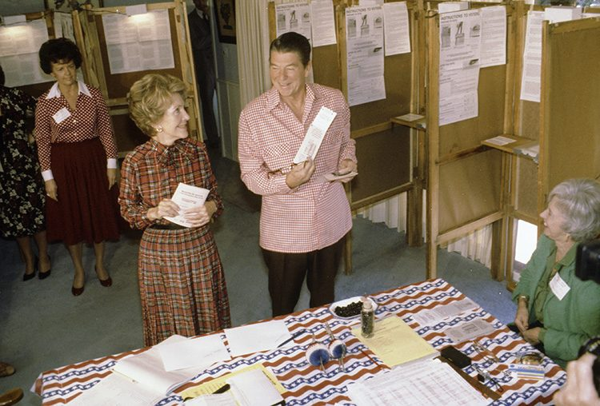
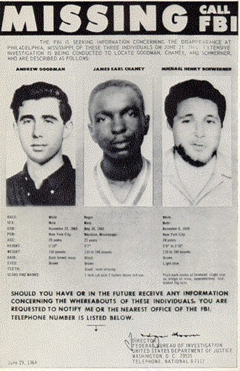
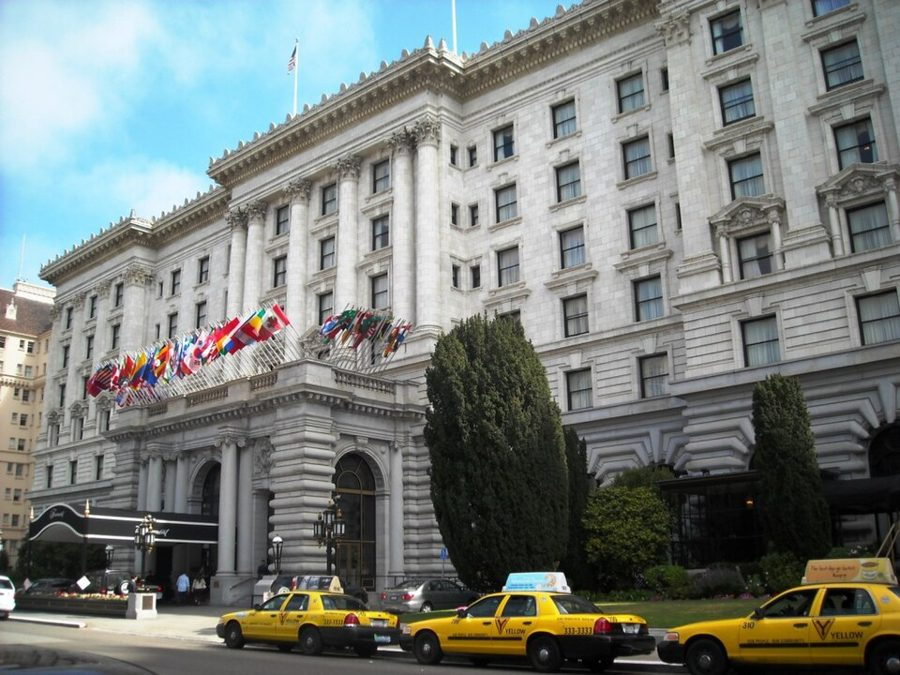
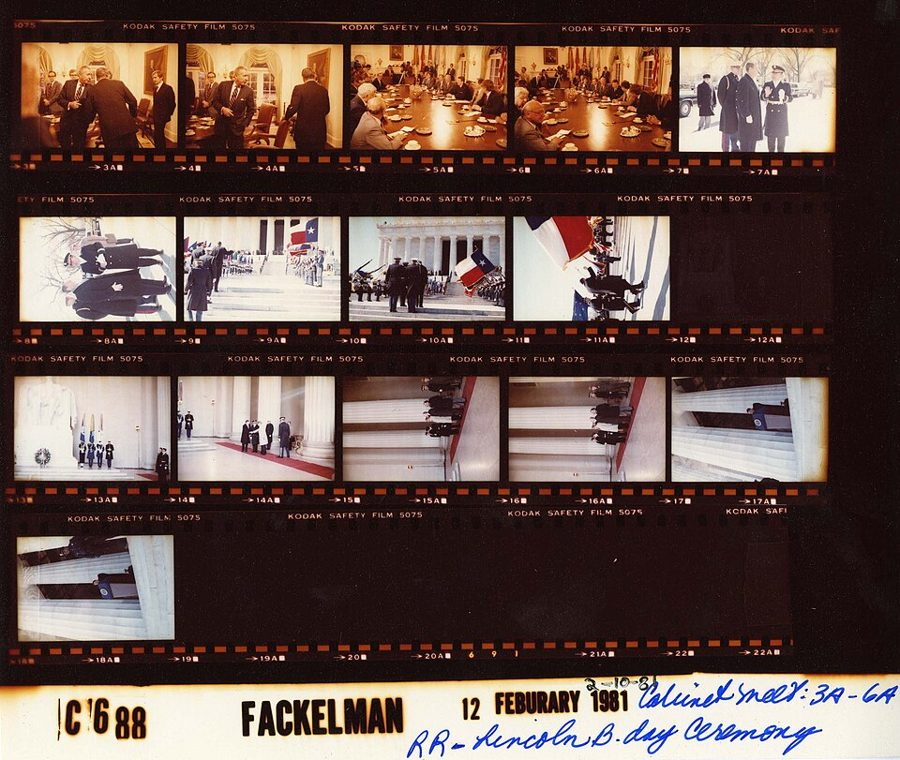

这一章在做什么
1980 年他五十岁，刚搬到斯坦福的胡佛研究所。这半章只讲一件事：报纸把他写成里根身边的红人，而他和里根的全部来往是两天、一顿午饭、一次握手。
读的时候把两本账分开记：媒体说了什么，实际发生了什么。作者的火气都压在玩笑里。
全国的事
他的事
1980.8 改讲稿两天
洛杉矶的竞选总部
1980.9 进胡佛
搬家，和 Mary 结婚
1980.11.4 里根当选
报上开始传他要入阁
1980.12 Fairmont
前后：谢绝教育部长
1981.1.20 里根就职
1981 年初 取消会议
血压升高，休息两周
1981.3.30 里根遇刺
几周后 白宫一天
握一次手，随后辞职
本站示意图。右边的月份按书里的说法；谢绝教育部长的电话书里没给日期，只知道在就职之前。
出场的人
这一页真名多、化名少，而且大半是公众人物。先分清家里的两个 Mary，再认一下里根的三种叫法。
Ronald Reagan /ˈreɪɡən/；the Governor、the President-elect 1980 年的共和党总统候选人。竞选时人人叫他 the Governor，当选到就职之间叫 President-elect。
Mr. Skeptic 和 Mr. Loyal 作者起的外号，不是名字 竞选总部的两个黑人助手。一个写了篇好讲稿却没被采用，心里犯嘀咕；一个处处替里根说话。
Mary 妻子 1980 年搬到 Palo Alto 时和他结婚。从头到尾反对他沾政治，这一页里负责给他递药。
Mary Frances 亲姐姐，在东岸 成年前后才认回的同胞姐姐（第 2、3 章）。心血管的毛病比他重，所以一条假消息就能把她吓着。
Birdie 只有一句话 养母家的小女儿，把他带大的人。她对「他从政」这件事的评语只有一句。
my son John，这一页没提名字 儿子，这时跟他住。第 1 节里他丢下一屋子人回家，就是为了他。
Clarence Thomas /ˈklærəns/ Fairmont 会议上发言的年轻人，作者只用一个形容词介绍他。1991 年起任最高法院大法官。
Milton Friedman 和 Ed Meese Meese /miːs/ 坐在会议听众席里的两位。弗里德曼是他在芝加哥的老师；米斯是里根最亲近的助手之一。
Carl Rowan /ˈroʊən/ 黑人专栏作家，批评他的人里最有名的一位。同被点名的 Walter Williams 是黑人经济学家，作者的朋友。
两个 Mary。 单说 Mary 是妻子，在加州，在他身边；Mary Frances 永远连着说，是姐姐，在东岸，只能靠电话和杂志知道他的消息。第 4 节有一句把两人并排写，第 6 节一人一段，听书时最容易串。
没有名字的人。 这一页里很多人作者故意不点名：竞选总部的 honcho、那位更高层的助手、旧金山的朋友和房主、住豪华套房的民权领袖。不必去猜是谁。
背景：作者默认你知道的事
1980 年：里根当选和组阁

1980 年 11 月 4 日，里根和夫人南希在加州 Pacific Palisades 投票。当晚他赢了。Ronald Reagan Presidential Library，公有领域，维基共享资源 里根当过八年加州州长（1967–1975），所以竞选时人人叫他 the Governor。1980 年 11 月 4 日他击败在任的卡特，1981 年 1 月 20 日就职。中间这两个多月要定下各部部长，部长须经参议院确认。
报纸这时最爱猜名单，猜错了也不用负责。书里那些「他要当某某部长」的传闻都出在这段时间。
章名是一首歌
September Song 是 1938 年音乐剧 Knickerbocker Holiday 里的歌，Kurt Weill 作曲，Maxwell Anderson 作词。一个上了年纪的男人唱：一年到了九月，剩下的日子不多了，不想再浪费在等待上。
这一章从五十岁讲起，头一句就在算「中年」这个词还能不能用。后面他辞掉一件件差事，只留下写书，可以和歌名对着看。
密西西比州的费城

1964 年 6 月联邦调查局的寻人告示。三个人的遗体在八月初才找到。Federal Bureau of Investigation，公有领域，维基共享资源 不是宾州的大城，是密西西比州 Neshoba 县的小镇。1964 年 6 月，三名帮黑人登记投票的民权工作者 Chaney、Goodman、Schwerner 在这里被三 K 党人杀害，州里当年没有以谋杀罪起诉任何人。
1980 年 8 月 3 日里根在这个县的集市上讲话，两天后去纽约对 Urban League 讲话。第 1 节末尾那通电话说的就是这个行程。
Neshoba 县集市的看台，摄于 2012 年。据图片说明，里根 1980 年 8 月 3 日就是在这里讲的话。书里把这个集市叫 state fair，实际是县办的。Robfergusonjr，CC BY-SA 3.0，维基共享资源
Fairmont 会议

旧金山 Nob Hill 上的 Fairmont 酒店，摄于 2008 年。Elisa.rolle，CC BY-SA 3.0，维基共享资源 1980 年 12 月在旧金山 Fairmont 酒店开的一次会，正式名字是 Black Alternatives Conference。当时全国性的民权组织和绝大多数黑人选票都站在民主党一边，媒体习惯把这些组织的负责人当作全体黑人的代言人。
这次会要让人看到黑人内部另有各种看法。后来说起「黑人保守派」，常从这次会算起，这是后人的说法，书里只说它开得和气。
胡佛研究所，和东岸的华盛顿
胡佛研究所（Hoover Institution）设在斯坦福大学校园里，1919 年由后来的总统胡佛创办，研究员不用教课，在美国通常被看作保守派的智库。所以批评者一提 Hoover 就带上形容词。
它在西岸，华盛顿在东岸，飞一趟五个多小时。这段距离在这一页里出现两次：一次是他不肯去做官的理由，一次是他开完会在机场量血压。
报上写的
书里说的
要当劳工、教育或住房部长
还有经济顾问委员会
一个电话，谢绝了
请他当教育部长
新总统耳边的谋士
a black Harry Hopkins
八年里一句话
互道早安，握手
正在政府内部运作
maneuvering
竞选时帮忙两天
此后再没有联系
在 Palo Alto 住院了
一家黑人杂志
在家休息，游泳
十多年没住过院
不见人的隐士
recluse
记者闯门之后
才撤门牌、换电话
本站示意图，两栏都是照书里的说法整理的。左栏的报道我们没有去核对原报。
总统的外部顾问

白宫摄影师的一页接触印相，1981 年 2 月。第一排前四格是里根在白宫见外部经济顾问，档案说明列出的与会者里有 Sowell、Friedman、Shultz、Greenspan。
书里第 7 节写的那次会在里根遇刺之后，和这页的日期对不上，是不是同一次，本站存疑。Mary Anne Fackelman，公有领域，维基共享资源 美国总统除了内阁，还会请一批不领薪水的外部专家，一年进白宫开几次会，提意见，不做决定。书里的 President’s Economic Policy Advisory Committee 就是这一类。
开会的 Cabinet room 是白宫里内阁开会的那间屋子，在里面开会不等于是内阁成员。Blair House 是街对面的国宾馆。
留个记号：后面还会回来
这一页承上的线比启下的多。四处先记下。
从图书馆借来消遣的那本书 第 2 节 Victor Purcell 写东南亚华人的大部头（1951 年出版）。作者说由它生出的计划，花的年头远比当时预想的多。计划是什么，下一页接着讲。
Potomac fever 的抗体 第 4 节 他说自己已经终身免疫，凭的是福特政府时那次联邦贸易委员会提名。那件事的来龙去脉在第 10 章。
家里的病史 第 6 节 一句「考虑到我家的病史」就取消了会议。第 10 章提过：两个亲哥哥在四五十岁时先后死于心脏病。
录音 第 1 节 三 K 党的玩笑靠的是 on tape 这个词。下一页录音会以另一种样子再出现一次，是本站的联想，到时可以回头看。
词与短语
词条按书里出现的顺序排，小标题是原书用 • • • 隔开的各节。斜体小字是那句话里的几个词，在 Kindle 里搜它就能跳到那一句。单个的生词长按就能查，这里收的主要是词典帮不上忙的。
第 1 节 · 两天的政治生涯
notoriety
… brought me far more notoriety than …
名声（不怎么好的那种）
他没用 fame。notoriety 是因为挨骂、惹争议而出的名。读 /ˌnoʊtəˈraɪəti/。
would still be to overstate
… would still be to overstate my …
（就算说「不大」）也还是说大了
全章的调子。见下面「值得停下来的句子」。
the Governor
… a speech for the Governor to deliver …
州长（指里根）
他 1975 年就卸任了。美国人对卸任的州长、总统、法官照旧用原来的头衔称呼。
the Urban League
… to the Urban League in New York, …
全国城市联盟
1910 年成立的老牌民权组织，重点在黑人的就业和城市生活。每年开年会，总统候选人常去讲话。
provided that
… to do it, provided that everyone …
前提是，只要
和「提供」无关，= on condition that。
Libertarians
… some of whom were Libertarians, so …
自由意志主义者
主张政府越小越好的一派，不等于共和党人。所以他说自己在那儿不算太格格不入。
honcho
… one of the campaign honchos. …
头头，管事的
美国口语，来自日语「班長」，是美军从日本带回来的词。读 /ˈhɑːntʃoʊ/。这一节出现五六次，都是不点名的竞选负责人。
what do you need me for
… what do you need me for?” …
那还要我来干什么
不是真在问。是在夸那篇被毙掉的讲稿，顺便替写稿的人说话。
have a bite to eat
… to go have a bite to …
随便吃点东西
go have 是美式口语，省了 and。破折号后面才是真正的目的：三个黑人私下谈。
from conviction or expediency
… whether from conviction or expediency. …
是出于信念，还是出于利害
expediency /ɪkˈspiːdiənsi/：怎么对自己方便就怎么来。作者没下判断，留了这半句。
wasn’t buying it
… but Mr. Skeptic wasn’t buying it. …
不吃这一套，不信
buy = 相信（一个说法）。
as well as could be expected
… went as well as could be …
照那个条件，也就只能这样了
医院通报病情的套话，意思是「不好」。所以下一句紧跟着说 did not go well。
ill at ease
… was a little ill at ease. …
不自在，局促
ill 不是生病，是「不」。
on tape
… “because I would be on tape.” …
（到场的）是我的录音
包袱在这里：我不紧张，因为我人根本不去，放盘磁带。他用一句笑话把一个不妥的类比岔开了。
thrown-together
… of the hastily thrown-together arguments of …
临时东拼西凑的
下一页开会也用了这个动词：throwing together a conference 。
strike the wrong notes
… striking the wrong notes and not …
调子全不对
note 是音符。该说的没说，说的都不在点上。
work it over
… room here and work it over, …
从头到尾改一遍
后面的 cutting and pasting 是真的剪刀和胶水，1980 年改稿子就是这么改的。
get my goat
… the speech really got my goat, …
把我惹火了
和山羊无关。老派口语。
Chappy James
… Air Force General Chappy James. …
詹姆斯将军
Daniel James Jr.，绰号通常拼作 Chappie。美军第一位黑人四星上将，1978 年去世。作者没说那句引语是什么。
at best … if not
… at best unfamiliar, if not foreboding. …
往好里说是陌生，弄不好是叫人害怕
A, if not B ：B 比 A 更重。foreboding = 不祥的。
on the cutting room floor
… is on the cutting room floor,” …
已经被剪掉了
电影行话：剪辑室地上扔的是没用上的胶片。对一位演员出身的候选人，这个比方顺手。
predictions made by economists
… so many predictions made by economists, …
经济学家做的预测
自嘲。他前一句「预测」那句引语不会出现在讲话里，结果错了。
styrofoam cups
… and drinks in styrofoam cups. …
泡沫塑料杯
Styrofoam 是商标，读 /ˈstaɪrəfoʊm/。记住这顿寒酸的午饭，第 5 节要拿它作对比。
pleasant enough
… was a pleasant enough gathering and …
气氛还算可以
形容词后面加 enough 是打折：过得去，仅此而已。
touch base with
… country to touch base with various …
和……打个照面，通个气
棒球：跑垒时脚要碰一下垒包。指短暂的接触，不是深谈。
much to the astonishment of
… much to the astonishment of Mr. …
让……大吃一惊
much to one’s + 情绪名词：结果让某人如何。Mr. Loyal 想不通有人会犹豫。
check you out
… the Secret Service checks you out, …
查一下你的底
Secret Service 是保卫总统和候选人的特勤局，上候选人的飞机要先过他们这一关。后半句 get back to you = 回头再联系你。
turned loose laughing
… the murder were turned loose laughing.” …
被放了，笑着走的
turn loose = 释放。这是他对助手说的话，口气很重。
over-ruled
… he said, “and I was over-ruled.” …
我的意见被上面否了
本是法庭用语：法官驳回异议。
第 2 节 · 搬家、结婚、一本借来的书
two-day political career
… my two-day political career now behind …
我那为期两天的「政治生涯」
career 配 two-day，自嘲。下一节又叫它 two-day misadventure （倒霉的小插曲）。
take me off medication
… doctor took me off medication for …
让我停了药
take 某人 off / put 某人 on 一种药：停药 / 开始用药。第 6 节有反过来的那一句。
absorbing
… it began absorbing more and more …
吞掉（我的时间）
一词两用：前一句 an absorbing story 是「引人入迷的」，这一句是字面的「吸走」。
push to one side
… study of Marx to one side. …
挤到一边去了
第 3 节 · 传闻，和 Fairmont 会议
Cabinet position
… considered for a Cabinet position in …
内阁职位，部长
美国各部的部长叫 Secretary。后面列的 Council of Economic Advisors 是总统的三人经济顾问班子，不算一个部（官方拼作 Advisers）。
so-called
… not yet exist by so-called “black …
所谓的
so-called 加引号，双重的不认账。他的意思是：没有谁选过这些人来代表全体黑人。
sunk in gloom
… as being “sunk in gloom” at …
愁云惨雾
他说这条报道最让他开心。1960 年代初他在劳工部做过经济分析，见第 5 章末和第 6 章。
bad enough
… would have been bad enough, but …
就已经够他们受的了
A would be bad enough, but B … ：A 已经糟，B 更糟。
in any capacity
… be in Washington in any capacity, …
以任何身份
capacity 这里是职位、身份，不是容量。
trouble my conscience
… would trouble my conscience to turn …
（推掉的话）良心上过不去
turn down = 谢绝。
in terrible shape
… was in such terrible shape, especially …
状况糟透了
shape = 状态。
aggravation
… was worth the aggravation of Washington …
烦心事，窝火
口语义。不是「加重、恶化」。第 4 节还有一次。
was another story
… all blacks was another story. …
那就是另一回事了
前面的传闻他当笑话看，这一件他笑不出来。
incensed
… I was incensed that such irresponsible …
气坏了
和 incense（香）同形，重音在后 /ɪnˈsenst/。第 6 节 Mary 也用了这个词。
bid for
… see much point in bidding for …
出价去争取（选票）
拍卖的说法。他的论点是经济学的：票已经铁定归一家，两家就都不用为它出价了。
monolithic
… picture of a monolithic black community. …
铁板一块的
monolith 是一整块巨石。这一节的关键词，出现三次。
push me as a prospect
… were pushing me as a prospect …
力推我做人选
prospect = 有望入选的人。
what Tom really meant
… ‘Well, what Tom really meant—’” …
「汤姆的意思其实是……」
想象总统天天替他的话打圆场。他知道自己说话得罪人。
If nominated I will not run
… “If nominated I will not run; …
提名我，我不选；选上了，我不干
南北战争名将谢尔曼 1884 年拒绝竞选总统时的话，后来成了彻底回绝的标准句式，叫 Shermanesque statement。
bat around
… After batting around various ideas, we …
七嘴八舌地议了一通
像把球打来打去。
time was of the essence
… that time was of the essence, …
事不宜迟
原是合同用语。
set in concrete
… black community was set in concrete. …
凝固定型，再也改不动
concrete 是混凝土。
on short notice
… conference on such short notice proved …
临时仓促之间
notice = 提前通知的时间。
to say the least
… an adventure, to say the least. …
这还是往轻里说
作者自己标出来的 understatement：adventure 实际是一团乱。
caliber
… of the caliber and diversity of …
（人的）分量、水准
本义是枪炮口径。
heavyweights
… the audience included heavyweights, such as …
重量级人物
拳击的重量级。Friedman 1976 年得了诺贝尔奖；Meese 当时正管着里根的交接班子。
blacker-than-thou
… attempts to be blacker-than-thou, and …
比谁「更黑」、更有资格代表黑人
仿 holier-than-thou （自以为比别人圣洁）。thou 是古英语的 you。这个词下一页还要用。
selling out
… charges of “selling out” or the …
出卖自己人
不是「卖光」。指为了个人好处背弃本族群。
a love feast
… the media called it “a love …
一团和气的聚会
原指早期基督徒的爱筵。记者这么说多少带点揶揄，作者当好话收下了。
little empires built on grant money
… little empires built on grant money. …
靠拨款撑起来的小山头
grant 是政府或基金会给的项目经费。empire 指某人一手把持的地盘。
第 4 节 · 一个电话，和 NBC 的记者
transient and tangential
… My transient and tangential relationship to …
短暂而且只沾了个边的
tangential 来自 tangent（切线）：只碰到一个点。读 /tænˈdʒenʃl/。
Harry Hopkins
… was a black Harry Hopkins, whispering …
哈里·霍普金斯
罗斯福总统最亲近的顾问，二战时一度就住在白宫里。拿来指「总统耳边的人」。
sit in on
… Ronald Reagan since sitting in on …
列席，在旁边坐着听
不是主角，也没发言。他特意选了这个词。
maneuver
… “Sowell is maneuvering within the Reagan …
暗中活动，运作
读 /məˈnuːvər/。
no decent way
… There was no decent way for …
没有一个得体的办法
decent 是「像样、不失礼」。
cannot very well
… You cannot very well make a …
总不好……
不是「不能很好地」。can’t very well do = 于情于理不便做。人家没请，你怎么声明不去？
hang up on
… I did not hang up on …
摔（某人的）电话
on 后面是被挂的那个人。
Potomac fever
… give me lifelong immunity to Potomac …
华盛顿官瘾
Potomac /pəˈtoʊmək/ 是流过华盛顿的河。「波托马克热」指一到首都就迷上权力和名位。他顺着比喻说自己有了抗体。
build me up
… The media continued to build me …
把我越捧越高
syndicated columnist
… Syndicated columnist Carl Rowan warned the …
多家报纸同时刊登的专栏作家
专栏由一家代理机构（syndicate）卖给全国各地的报纸。作者自己后来也是。
supplicants for the largesse
… were “supplicants” for the “largesse” of …
伸手讨赏的人
supplicant：跪着求的人；largesse /lɑːrˈdʒes/：上头的赏赐。两个词都是 Rowan 的。
butter up
… as attempts to butter up the …
拍……的马屁
of all stripes (and colors)
… opportunists of all stripes (and colors) …
形形色色的（各种肤色的）
of all stripes = 各种各样。括号里的 colors 是骂人者加的，专指黑人。
rhetorical flourishes
… These rhetorical flourishes were much less …
这些花里胡哨的辞藻
把「苍蝇追垃圾车」叫作修辞上的花腔，是往轻里说。他要讲的是：骂我没关系，别打断我干活。
beat a retreat
… he decide to beat a retreat. …
赶紧撤了
原指击鼓收兵。前半句 advanced on him 也是军事用语：朝他逼过去。
unlisted
… and the new number was unlisted. …
不登在电话簿上
那时每户的电话默认印在电话公司发的号码簿里，谁都查得到。
walk in off the street
… could walk in off the street …
不用预约，从街上直接走进来
后面的 drop by 、dropped in 都是「顺路进来坐坐」。
media hype
… Media hype put an end to …
媒体的炒作
段末的 recluse /ˈrekluːs/ 是隐士、不见人的人。
第 5 节 · 求官的信，和两间套房
district judgeship
… not accept a district judgeship, but …
联邦地区法院法官的位子
联邦法院三级：地区法院、上诉法院（appellate court）、最高法院，法官都由总统任命。这位教授嫌第一级低。
dog-catcher
… gotten anyone appointed as dog-catcher. …
抓野狗的（最小的差事）
美国俗话里地方上最不起眼的公职。连这个都安排不了。
form letter
… had to write a form letter, …
统一格式的回信
印好一批，每人寄一份。form 是「格式」。
off-the-record
… me to an off-the-record lunch at …
不对外、不留记录的
新闻用语：说的话不得引用。
fine China
… complete with fine China, linen tablecloth, …
上等瓷器
不是中国。瓷器通常小写 china，书里排成了大写。
at the taxpayers’ expense
… no doubt at the taxpayers’ expense …
花的是纳税人的钱
no doubt 是「想必」，是推测，不是证据。这是他的看法。
第 6 节 · 第二次会议开不成了
translate into
… does not necessarily translate into their …
变成，落实为
和翻译无关。热情不等于肯出力。
keep after
… have to keep after other people …
盯在后面一遍遍催
all too ready to
… work were all too ready to …
倒是巴不得（去做）
all too = 过分地，带责备。干活慢，见记者快。
killing me with kindness
… they were killing me with kindness. …
好心好意地要了我的命
成语。来信来电都是支持他的，累垮他的正是这些支持。
galley proofs
… When the galley proofs for Ethnic …
长条校样
出版社排好版后寄给作者做最后校对的样张，下文简称 galleys。
take their toll
… began to take their toll in …
开始让身体付出代价
toll 本是过路费。
not about to press my luck
… was not about to press my …
绝不打算拿命去赌
not about to 是「决不肯」，不是「没有即将」。press one’s luck = 得寸进尺地碰运气。
done in
… at how I had been done …
被折腾垮了
The very idea
… “The very idea of your going …
亏你想得出！
感叹句，没有谓语：光是这个念头就够荒唐的。
have a field day
… media now had a field day …
可算逮着机会，大做文章
cramp their style
… did not let accuracy cramp their …
碍着他们发挥
整句反着读：他们没让「准确」束住手脚，也就是随便写。
badly off
… must be so badly off that …
病得很重
通常指穷，这里指病情。
in laps
… from swimming 500 yards in laps …
一个来回一个来回地（游）
lap 是泳池的一趟。500 码约 460 米。一句话就把「住院」的谣言顶回去了。
第 7 节 · 和总统说过的全部的话
bi-weekly
… to write a bi-weekly column for …
两周一篇的
这个词也可以指一周两次，这里按专栏的常规是两周一次。约稿的 Meg Greenfield 是《华盛顿邮报》社论版主编。
back out of
… I had to back out of …
答应了又退出
Guiness Book of World Records
… for the Guiness Book of World …
吉尼斯世界纪录
书里少拼了一个 n，通常作 Guinness，读 /ˈɡɪnɪs/。Dulles /ˈdʌlɪs/ 是华盛顿的国际机场。
Blair House
… first met in Blair House, across …
布莱尔宫
白宫对面的总统宾馆，平时招待来访的外国元首。
Capitol Hill
… he was over on Capitol Hill, …
国会山
国会所在的小山，也泛指国会。和白宫隔着两公里多，所以说 over on 。
Pay it no mind
… Congressman said. “Pay it no mind.” …
别往心里去
口语。骂总统是骂给选民听的。作者说这是那天他记得最牢的事。
It was good to see him
… It was good to see him. …
见到他确实是好事
上一行是客套，这一行把同一句话当真话再说一遍。重音在 was。
the sum total of
… was the sum total of all …
加起来的全部，统共就这些
值得停下来的句子
To say that my actual involvement was modest would still be to overstate my role considerably.— 第 1 节，全章第一段的最后一句。本站译：说我实际参与得「不多」，都还是把我的分量大大说高了。
主语是不定式 To say that … ，谓语是 would still be to overstate 。modest 已经是个往小里说的词，他说连这个词都嫌大。
这一句是后面所有事情的尺子：读到报上的每一条传闻，都拿它量一下。也留意他没说的：他并没有说自己不赞成里根的主张，只说自己不在里面。
It was good to see him. He had been shot just a few weeks earlier.— 第 7 节，在白宫内阁室握手之后。本站译：见到他是真好。几个星期前他刚中过枪。
前两行是总统和他互道「见到你很高兴」。第三行去掉引号，把这句客套话用陈述句重说一遍，再用一个短句给出理由。
全页都在说他和里根没什么关系，到这里有一处不带玩笑的好感，只占两句，然后马上回到算账：八年里统共就说过这些话。
检查一下理解
先在心里答，再点开。答错的那题，回书里把那一节再读（或再听）一遍。
1. 他说的「两天的政治生涯」，为什么只有两天？是里根那边不要他了吗？ 是他自己退出的。他答应随里根的飞机去拜访黑人团体，回家一看行程表，第一站是密西西比州的费城，1964 年三名民权工作者遇害的地方。他认为拿这一站开头去争取黑人选票说不过去，对方说已定，他就不去了。
2. 三 K 党那个类比是谁提的？作者那句 “I would be on tape” 是什么意思？ 是 Mr. Loyal 提的，他想说明里根面对黑人听众紧张情有可原，结果比得很不妥，Mr. Skeptic 脸色都变了。作者的回答是玩笑：我不紧张，因为去的只是我的录音，人不到场。他没有接这个类比，是把话岔开。
3. 报上传他要当劳工部长。真正来电话请他的是哪个职位？他为什么拒绝？ 教育部长。那也是他唯一觉得推掉会于心不安的职位，因为低收入少数族裔孩子的教育状况太糟。但他判断自己没有政治上的本事和脾气，去了办不成事，白白搭上健康。劳工部长的传闻是旧金山那位房主在推，他当面叫停了。
4. Fairmont 会议是一次「黑人共和党人」的聚会吗？ 那是媒体的叫法，他专门反驳了：他自己和不少与会者都不是共和党人，至少有两位是民主党的官员，发言的人里还有白人。会议的本意正是要打破「黑人只有一种看法」的印象，结果又被贴了一个单一的标签。
5. 第二次会议取消了，是因为响应的人太少吗？ 正相反。消息提前漏给了《华盛顿邮报》，电话和来信多到他和秘书白天没法干活，而且几乎都是支持的。他说这是 killing me with kindness。连续几周加班之后血压升上去，医生让他在家休息，他就把会取消了。
6. 看了杂志着急打电话来的是 Mary 还是 Mary Frances？她为什么往坏处想？ 是姐姐 Mary Frances。杂志说他住院了，可家里没人告诉过她，她就以为病重到大家在瞒她；头一次打电话又没人接。妻子 Mary 一直在他身边，是给他递药、说 “The very idea!” 的那位。